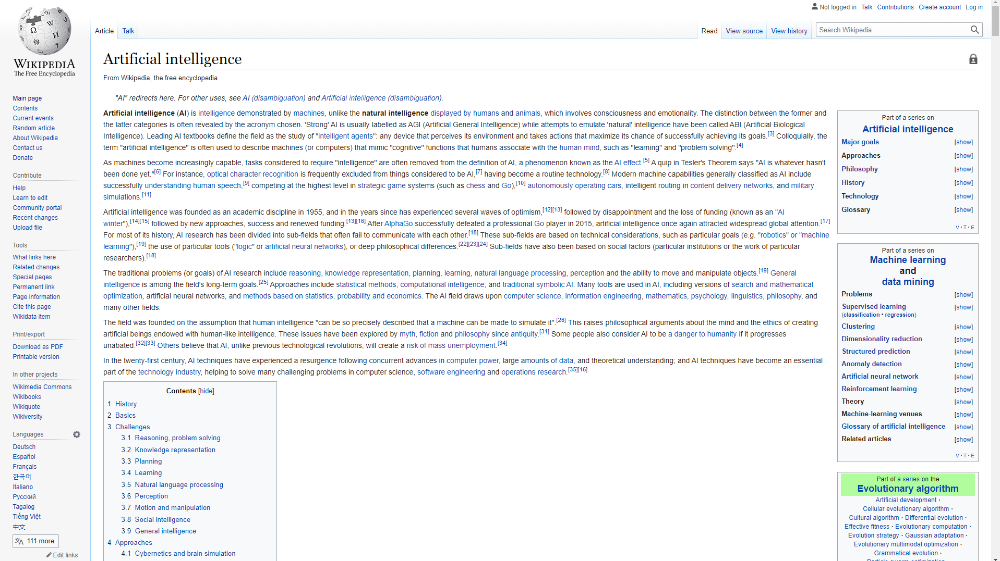
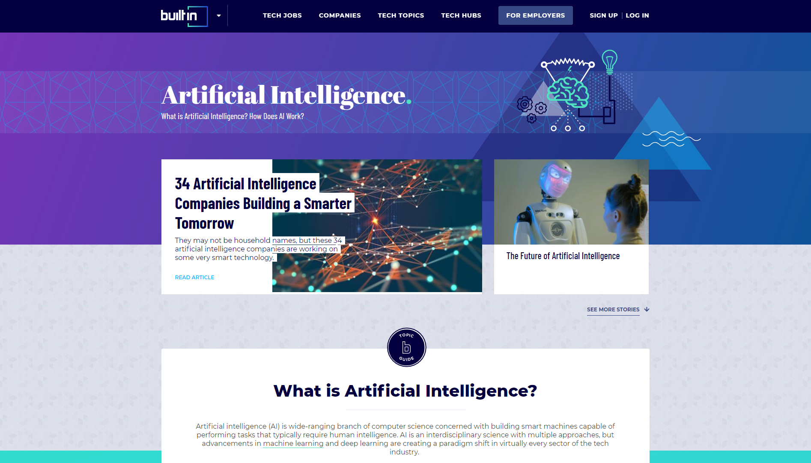

-
1.) What is the purpose of the site?
-
The purpose of this site is to inform the public on the use
and general practice of artificial intelligence or AI. This
site will serve as a one-stop-shop for all the general
information surrounding AI. The site will discuss the
different types of AI and examples of how they can be used.
-
2.) What do you want the website to accomplish?
-
This website will accomplish the task of informing the public
of the new advancements in artificial intelligence. It will
provide numerous examples of how artificial intelligence is
used in our everyday lives. This site will enlighten and
educate the general public by defining and reviewing basic
terms as they relate to AI. It will also discuss and challenge
prevalent topics and issues in this emerging new field.
-
3.) Who is your intended audience?
-
The intended audience of this website is anyone that would
like to learn more about artificial intelligence. The age
range for this website is vast. Anyone that can read and
understand basic technical terms is welcome! No complex
technical knowledge will be required to understand the
material on this site.
-
4.) What opportunity, problem, or issue is your site
addressing?
-
This site will address the problem of not knowing the
definition and/or use of artificial intelligence. It will
briefly cover the topic in easy-to-understand words and
phrases. The site will also cover several issues surrounding
AI. This site will serve as a starting point for people who
want to delve deeper into the field of artificial
intelligence.
-
5.) What type of content might be included in your site?
-
Possibilities include...
- What is AI?
- General overview of AI
- Definitions of key terms
- Types of AI
- Examples of AI
- AI in the news
- Problems with AI
- Ethics in AI
- More to come...
6.) List 3 similar sites, and specify whether each example is
based on content or design inspiration.
Artificial intelligence page on Wikipedia

Click image to display larger...
Artificial intelligence page on Builtin
-
Builtin Page
-
This example is similar based on content and design.

Click image to display larger...
Artificial intelligence page on SAS
-
SAS Page
-
This example is similar based on content and design.
Click image to display larger...
Return to assignment page...
{kind=link}
{kind=link}
{kind=link}